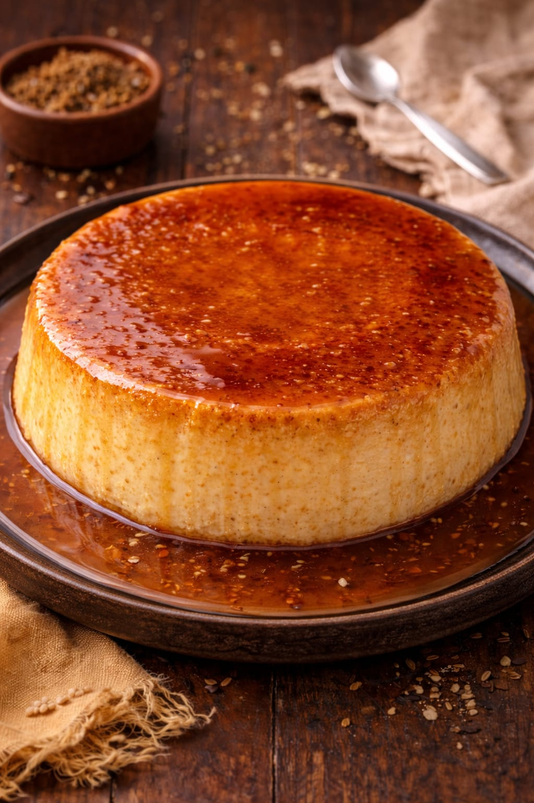
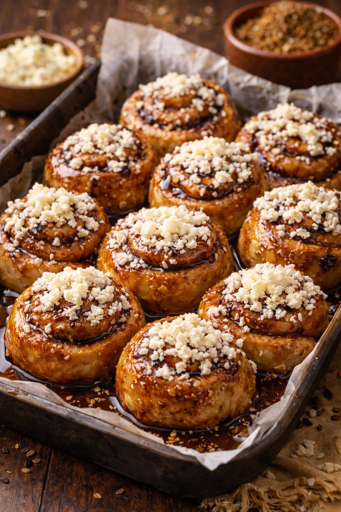

Recetarios | La Dulceria de Nelly
QUESILLO
El Quesillo venezolano es un postre tradicional, similar a un flan pero más denso y cremoso, caracterizado por su textura porosa y cobertura de caramelo dorado. Se elabora horneando a baño María una mezcla de leche condensada, huevos, leche líquida, vainilla y a veces ron, sin contener queso real. Es el dulce icónico de las celebraciones en Venezuela.
Ingredientes
5-6 huevos, 1 lata leche condensada (397 g), 1 lata leche. La misma de la leche condensada, 1 chorrito esencia de vainilla, 1 chorrito ron (Opcional).
Caramelo
6 cucharadas azúcar.
Paso a paso
1- En una olla a fuego medio, agregamos el azúcar y esperamos que se derrita por completo. Luego lo pasamos al molde y lo untamos por todas las paredes con cuidado.
2- Mientras se enfría el caramelo en el molde, agregamos todos los ingredientes en una licuadora y mezclamos por un minuto. Luego, agregamos la mezcla al molde y tapamos. Yo utilicé estos moldecitos y salieron 3 quesillos y tapé los moldes con papel aluminio..
3- En una olla grande (donde quepa bien el molde), agregamos agua que quede a la mitad del molde (una vez que hierva el agua, bajamos el fuego) y tapamos por una hora.
4- Pasada una hora, sacamos el molde con cuidado y para saber que está listo, pinchamos con un palillo; este debería salir limpio. Esperamos que el molde este tibio, despegamos el quesillo de todas las paredes y volteamos en un plato para luego dejarlo en la nevera unas cuatro horas o preferiblemente dejarlo hasta el día siguiente.

TRES LECHES
El tres leches es un postre tradicional de América Latina que consiste en un bizcocho esponjoso (generalmente un bizcocho genovés) que se baña con una mezcla de tres tipos de productos lácteos. A diferencia de otros pasteles, su textura es extremadamente húmeda pero no se deshace, ya que el bizcocho está diseñado para absorber los líquidos como una esponja.
Ingredientes
(PARA EL BIZCOCHUELO) 6 Huevos, 180 gr Azúcar, 180 gr Harina, 1 Cdita Esencia de vainilla.
(PARA HUMEDECER) 150 gr Crema, 150 gr Leche Condensada, 250 ml Leche.
(PARA DECORAR) 200 gr Crema, 4 Cucharadas azúcar.
Paso a paso
1- Precalentar el horno a 180°.
2- Mezclar los huevos con el azúcar y la esencia de vainilla hasta punto letra.
3- Agregar la harina con movimiento envolventes para no generar aire y verter en un molde dejando 1 cm como mínimo.
4- Llevar al horno a 180° por 40 min, sacarlo y hacerle muchos agujeros por todos lados pinchando con un palito de brochettes o lo que tengas.
5- Mezclar todas las leches hasta que sea un líquido homogéneo y verter sobre el bizcochuelo, déjalo reposar por lo menos 2hs antes de comer.
6-Por último batir la crema con el azúcar hasta punto chantilly y decorar a gusto.

GOLFEADO
es un pan dulce tradicional de Venezuela, específicamente de la región central (Caracas y sus alrededores). Se asemeja visualmente a un rollo de canela, pero tiene una identidad de sabor única basada en el contraste entre lo dulce y lo salado.
Ingredientes
1 kg harina 000, 30 gr levadura fresca, 300 ml leche tibia, 300 gr azúcar, 2 huevos, 50 ml aceite, c/n Anís dulce.
(PARA EL RELLENO)
50 gr manteca derretida, 300 gr azúcar mascabo, Queso llanero rallado
Paso a paso
1- En la mitad de la leche disolvemos la levadura, una cucharada de azúcar y dos cucharadas de harina tomadas del total de la receta mezclar tapar y dejar reposar.
2- Pasado este tiempo en un bol colocar la harina hacer un hueco en el centro y colocar allí azúcar, huevos, aceite, anís y la levadura reposada ir mezclando y la otra mitad de la leche ir agregando a medida que la masa la pida.
3- Amasar hasta que la masa se ponga lisa y elástica debe quedar una masa suave dejar reposar tapada hasta wue duplique su tamaño.
4- Cuando haya duplicado su volumen pasarla a la mesada desgasificar, cortar la masa en dos uno de los trozos taparla y la otra estirarla en forma rectangular.
5- Pincelamos el rectángulo de masa con la manteca derretida luego extendemos el azúcar mascabo encima y el queso rallado enrollamos haciendo presión cortamos trozos de regular tamaño no deben ser muy gruesos.
6- Los colocamos en una bandeja engrasada sin mucha separacióny dejamos reposar tapados hasta wue dupliquen.
7- Luego se pincelan con un almíbar hecho con azúcar mascabo y agua en partes iguales y se llevan a horno precalentado a 180° por 40 minutos al sacarlos del horno esparcir queso llanero aún calientes.
